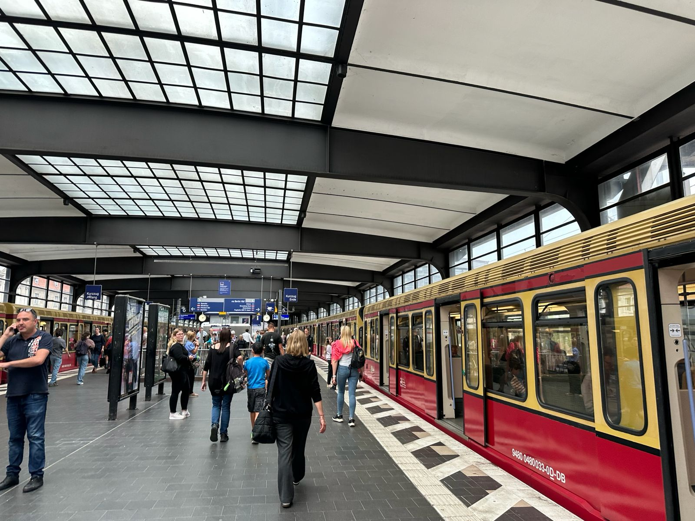

Latest Interrail News
Keep track of new routes, travel updates, and pass information across Europe.
Interrail Updates

New Night Trains Across Europe
Several overnight train routes are returning in 2026, making night travel easier and scenic.
Read More
2026 Interrail Pass Prices Released
The new Interrail pass prices are out! Plan ahead to get the best deals.
Read More
Travel Advisory Updates
Be aware of seasonal schedule changes and COVID-related travel regulations.
Read More